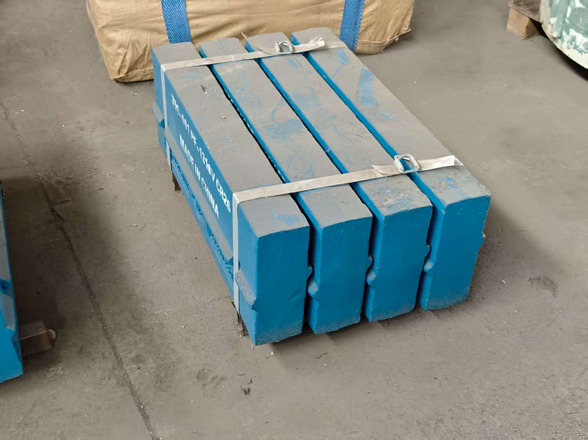
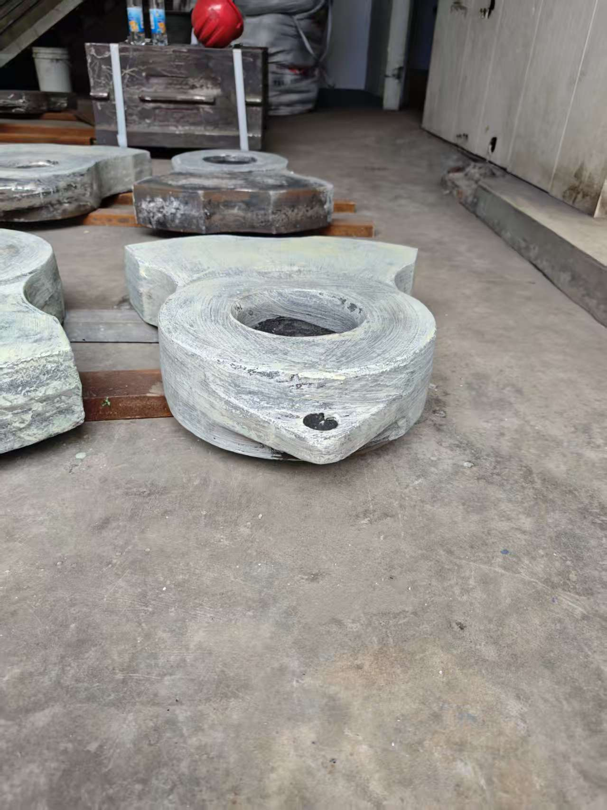
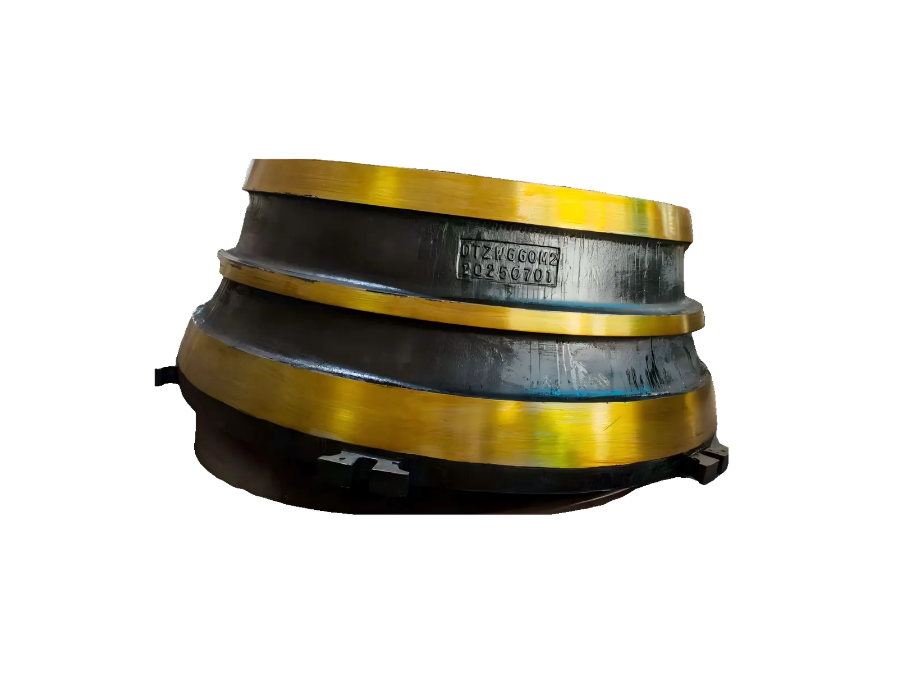

High-wear crushing zones
Jaw plates handle compression crushing, while VSI rotor parts work in high-speed impact and material acceleration zones.
Jaw / VSI
Jaw plates, cheek plates, VSI rotor tips, distributor plates and Barmac style wear parts for crushing and screening plants.
Jaw plates handle compression crushing, while VSI rotor parts work in high-speed impact and material acceleration zones.
Jaw plates require tooth profile, thickness and material confirmation. VSI parts require rotor model and mounting details.
Material choice depends on rock type, feed size, impact conditions and required service life.
When part numbers are missing, XCT can start RFQ confirmation from used-part photos and key dimensions.



Supply scope includes fixed jaw plates, movable jaw plates, side liners, cheek plates, VSI rotor tips, distributor plates and Barmac-style rotor parts.
Checks include tooth profile, hole layout, thickness, key dimensions, material confirmation, visual condition and packing photos on request.
MOQ can start from 1 pc. Lead time depends on pattern, material and machining. Heavy jaw plates are packed by pallet or wooden case.
Barmac and other brand names are used only to identify compatible replacement applications. XCT Mining is independent and unaffiliated.
Buyer FAQ
Send model, fixed or movable position, tooth profile, reference number, drawing or photos, material, quantity, destination and required delivery date.
Send rotor model, part name, reference number, mounting photos, material or insert requirement, quantity and destination.